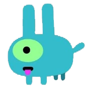

¡Conoce a Nuestro Equipo!
Unos entusiastas del mundo del senderismo
-

Pablo E.
Ingeniero DevOps
Experto en servidores, pipelines y en mantener todo funcionando sin problemas.
-

Héctor M.
Diseñador de UI/UX
Transformando ideas en diseños impresionantes, un píxel a píxel.
-

Francisco C.
Desarrollador móvil
Creando aplicaciones elegantes e intuitivas para usuarios en movimiento.
-

Rubén C.
Científico de datos
Descifrando patrones y encontrando información valiosa en el caos.
-

Vista el Senderista
Apoyo moral
Miedoso pero fiel. Siempre alerta, siempre con nosotros.